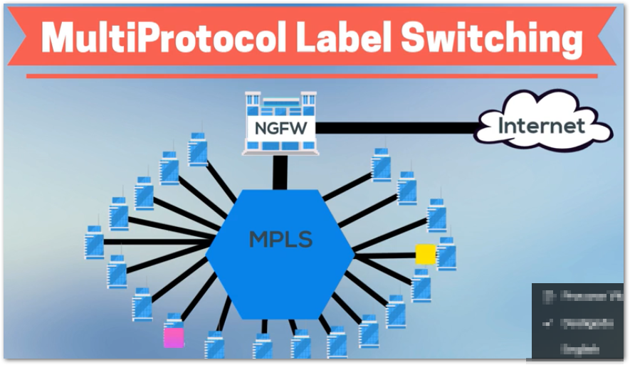

MultiProtocol Label Switching (MPLS):routing traffic within a network as data travels from one network to another.
- Avoid packet loss
- Keeping business-critical traffic flowing
- More scalable
- Data center in this case it is like an intermediate to the send to the internet, porque muitos dados criticos estão presentes nos data centers
- Agora as empresas podem colocar suas aplicações business-critical na nuvem publica ou rent SaaS
- Next Generation Firewalls: NGFW
 - Software Defined Wide Area Network (SD-WAN):address growing latency and cost usando barato
e links de largura de banda mais amplos.
- Has a direct access to the Internet to SaaS applications and because of this, It is exposed to malware and other threats
- Need install NFFW each Internet point of acess
- Reduces network downtime - Reduces application latency
- Avoid bottleneck in the MPLS model
- Prioritize bussiness-critical traffic
- provide enriched security(end-to-end encryption)
- all devices are authenticated
-
Nenhuma defesa inerente contra ameaças avançadas
-
A criptografia de dados oculta vírus que podem ignorar uma verificação antivírus
- Next Generation Firewalls( NGFW)
FortiGate NGFW = Next Generation Firewall + SD-WAN - Includes:
Application Control
Url Filtering
Anti-virus
Intrusion prevention system(IPS)
Integration with sandboxing
SSL inspection.
SSL:more commonly called TLS, is a protocol for encrypting Internet traffic and verifying server identity. Any website with an HTTPS web address uses SSL/TLS